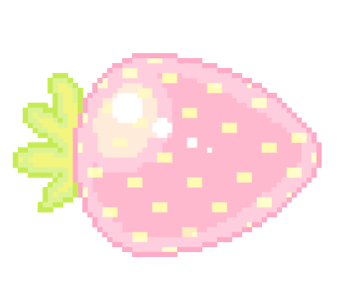

WHY PINK?
It's simple, it's just the most perfect colour in my eyes. I see the color and it just makes me think, how grateful I am to exist in a world of pink ink! Makes the world a tad bit more fun... more than you think in pink! :) Wink wink- okay I'll stop. I've just loved this colour ever since I was a kid. I didn't wear many pink clothes as a child, in fact, I didn't have much control or say of what to or not to wear so the colors were all over the place. I remember I wore it a lot as a rebellious teen in my emo-days back in 2005/2006. But then I grew out of it again? And I guess at some point in my adult life I stopped wearing it completely and just wore black. But I'm in my 30's now, lost my dad to illness this year and realised that life's too short to worry about anyone else but myself! So I guess in a way I found the path back to myself again through some tough times! ♥
